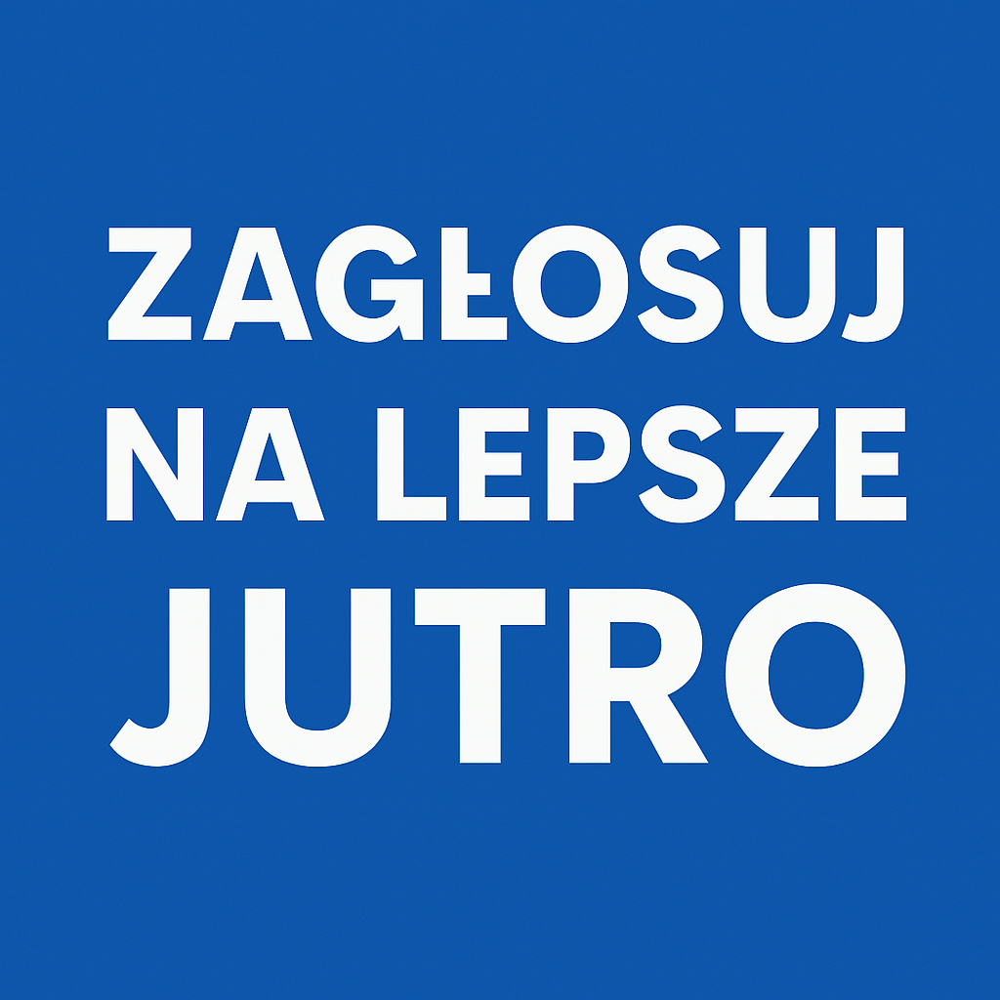

Nasz Zespół
Przyszłość i Jedność to ludzie, którzy wierzą w zmiany – konkretne, uczciwe i odpowiedzialne. Nasz zespół to mieszanka doświadczenia i świeżej energii:
- Leon P. – txt
- Piotr M. – txt
- Kamil B. – txt
O nas
Witamy na stronie partii Przyszłość i Jedność (PiJ). Wierzymy w silną, sprawiedliwą Polskę, która dba o rodzinę, młodzież, seniorów oraz przyszłe pokolenia. Naszym celem jest uczciwe państwo, nowoczesna gospodarka i równy dostęp do szans dla każdego obywatela.
Program
- 800+ dla pracujących rodziców
- Finansowanie In Vitro z budżetu państwa (500 mln na in vitro)
- 1500 zł dla mam wracających do pracy po urodzeniu dziecka
- Polityka antyprzemocowa
- Troska o zdrowie psychiczne i fizyczne mężczyzn
- Finansowanie telefonu zaufania dla dzieci
- Jeden bilet za 175 zł na cały miesiąc podróży po Polsce
- Wsparcie emocjonalne, szybsze leczenie psychiczne
- 35-minutowe lekcje, dłuższe przerwy, pomoc psychologiczna
- Walka z cyberprzemocą i przemocą szkolną
- Seniorzy w pierwszej kolejnosci mają dostęp do opieki medycznej
- Brak podatku dla emerytów ( emerytura do 5000 zł brutto )
- Ufunodwanie domów opieki i domów spotkań dla seniorów
- Zwiększenie budżetu obronności do 5% PKB
- Minimalizacja inflacji
- Inwestowanie w gospodarkę, rolnictwo i usługi
- Likwidacja podatku dla emerytów
- 800+ w bonach dla pracujących
- Wszystkie szczepienia dla dzieci bezpłatne ale obowiązkowe
- Zwiększenie zasiłków dla matek wychowujących dzieci niepełnosprawne
- 5% PKB na edukacje
- Przywrócenie zadań domowych
- Modernizacja polskich przedmiotów naukowych
- Plastyka i Muzyka w szkołach artystycznych
- Obowiązkowa Technika w klasach 3-8
- Wycofanie przedmiotu HiT
- Religia tylko na pierwszej i ostatniej lekcj
- Zakaz protestów i działań aktywistów
- Zwiększenie jakości powietrza
- Zwiększenie jakości zasobów naturalnych
- Zmniejszenie zanieczyszczenia naturalnych sektorów Polski
- Chorzy na raka objęci szczególną opieką
- Bezpieczna ciąża, poród ze znieczuleniem jako standard
- Inwestycja w zagraniczne technologie i rozwój badań naukowych oraz produkcji nad medycyną
- Zwiększenie tempa i jakości medycyny poprzez rozwinięcie telekomunikacji itd.
- Tańsza opieka medyczna
- Legalna Aborcja w przypadku zagrożenia życia matki lub 12 tyg życia płodu
- Poparcie dla Ukrainy w starciu z Rosją
- Poparcie dla Palestyny w walce o suwerenność
- Poparcie dla NATO, UE i ONZ
- Walka polityczna przecieko działaniom Putina, Netanjahu, Łukaszenki oraz Trumpa
- Przeprowadzenie działań przeciwko korupcji
- Większe kary dla przestępców
- Rozliczenie byłych rządzących
- Sprzęty Wojskowe
- Rozbudowa sektora fabryk
- Zwiększenie jakości, ilości i tempa produkcji rolniczej
- Wszystkie niedziele - sklepu otwarte, kasy samoobsługowe pod nadzorem właściciela sklepu
- Nie przyjmujemy ukraińskich produktów ze względu na skażenie
- Likwidacja ministerstwa do spraw równości
- Brak możliwości do adopcji dla par homoseksualnych
- Brak możliwości do zawiązania małżeństwa dla par LGBT
- Równouprawnienie kobiet i mężczyzn
- Odbudujemy polską hodowlę świń
- Dofinansowanie dla sektora rolniczego
- Unowocześnienie polskiego rolnictwa
- Obniżenie kosztów prowadzenia gospodarstwa poprzez zaopatrzenie gospodarstw w farmy fotowoltaiczne, wiatrakowe, pompy ciepła i biogazowanie
- Likwidacja Zielonego Ładu
- Brak ingerencji rządu w działania kościoła
- Wzmocnienie relacji rząd-kościół
- Religia tylko na pierwszej lub ostatniej lekcji
- Obowiązkowe ( tydzień w roku ) szkolenie wojskowe dla osób w wieku 18-60 lat
- Modernizacja wojska polskiego, nowoczesny sprzęt zagraniczny
- Sojusz militarny z państwami europejskimi,USA,Kanadą itd
- Zwiększenie budżetu obronności do 5% PKB
- Wzmocnienie wschodniej flanki, uszczelnienie wielkiego muru na wschodniej granicy, zabezpieczenie polskiego powietrza poprzez rozmieszczenie baterii przeciwlotniczych, wyrzutni rakietowych, artylerii przeciwlotniczej itd.
- Pozwolenie na użycie broni dla Polskich żołnierzy w trakcie zagrożenia życia
- Wzmocnienie i unowocześnienie wojsk terytorialnych
- Budowa stoczni, fabryk itd. Aby wzmocnić polską marynarkę wojenną
- Możliwość powrotu do służby dla niesłusznie zwolnionych żołnierzy
- Rozporządzenie o obronie polskiego munduru
- Dołączenie do sojuszu europejskiej tarczy rakietowej
- Badania nad kosmosem
- Specjalne warunki dla osób innych narodowości, obowiązek pracy
- Budowa nowoczesnego lotniska
- Nowe trasy kolejowo-powietrzno-morskie
- Zwiększenie tempa i jakości podróży